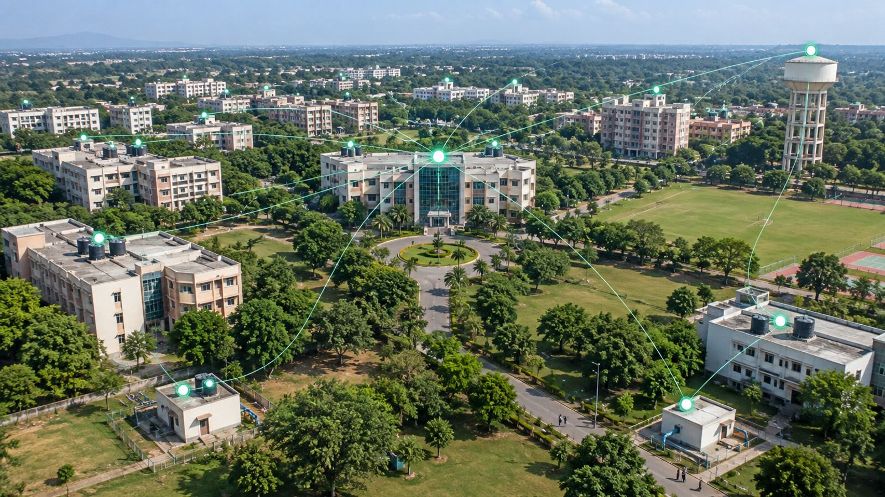
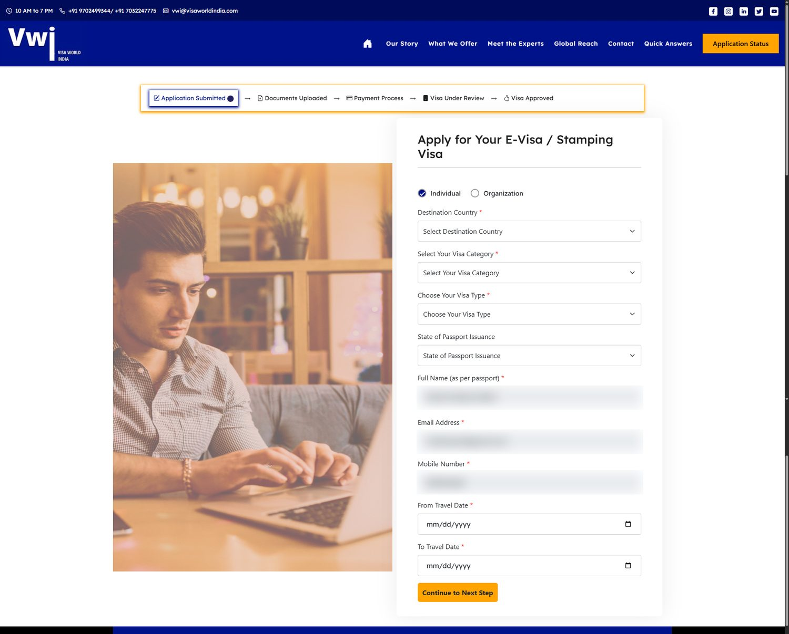

Engineering the physical world, since 2008
Smart buildings. Connected devices. Real results.
From safeguarding critical infrastructure to powering large-scale digital platforms, we engineer solutions that bridge the physical and digital worlds — solving real business problems with precision and impact.
View our workOur story
In this issue: what we build
Water, energy, air quality and safety — monitored in real time across smart buildings.
Sensor hardware to firmware to cloud, deployed across India and the US.
Production monitoring and predictive maintenance for the plant floor.
Process data at source, with offline capability.
From paper workflows to platforms that process thousands of applications.
Production-grade platforms built to measurable outcomes.
Native Android and iOS apps, from IoT dashboards to consumer scale.
AWS, Azure and GCP behind live IoT platforms.
Selected work
Case study 03
Seamless visa processing, from paper to platform
For one of India's leading visa agencies, we replaced a manual workflow with a platform that builds a personalised document checklist for every applicant and checks each upload automatically.

Smart building management
Water, energy, air, light and analytics on one platform.

Restaurant automation
Utilities, kitchen equipment and HVAC, measured.

Cold storage monitoring
Temperature, door and compressor health, alerted.